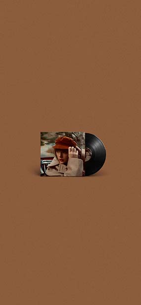

个人荣誉
Personal Honors
获奖记录
Record of Awards
个人作品
Individual Works
Taylor Swift's 10th studio album, Midnights, was released on October 21, 2022. Taylors described the album as a journey between dreams and nightmares, describing her 13 sleepless nights. Midnights was still written and produced by his old friend Jack Antonoff, and William Bowery was also involved in Vigilante Shit and Sweet Nothing, Even more surprising was the invitation for Lana Del Rey to collaborate on the song "Snow on the Beach".